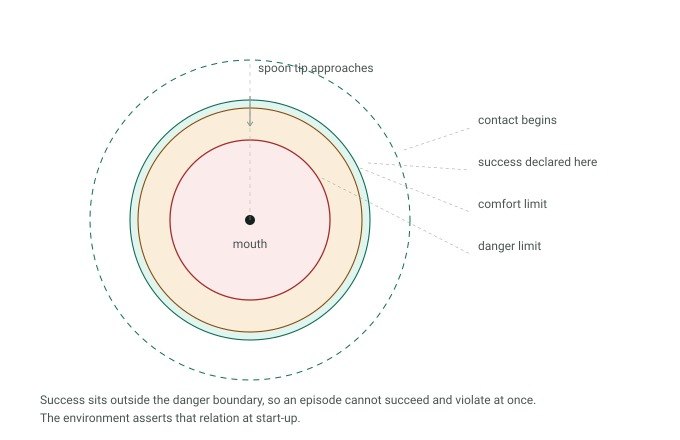
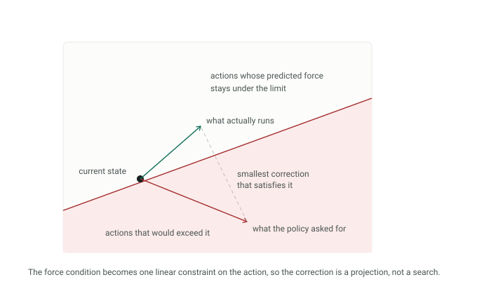

A robot that feeds someone has to bring a spoon within centimetres of their face, and the people who need that help are the least able to pull away from a bad trajectory. Industrial robots solve safety by keeping the human out of reach. Here, contact is the task.
Write-up in progress. This page describes the shape of the study and leaves out the formulation, the parameter values and the results, which belong in the paper.
Why the answer isn't already known
There is no shortage of safety mechanisms. Feeding systems sense contact and classify it before responding. Reward penalties make force expensive. Formal shields give hard guarantees, at the cost of a dynamics model and real work at every control step. Each came out of a different research tradition and was validated on a different robot, a different task, and a different measure of success.
So nobody can say which class suits feeding — not because the work is missing, but because it has never been put side by side. That is what this study is: one task, one robot, one contact model, one learning algorithm, and the safety mechanism as the only thing that changes.
Four conditions

Read the stations across the top and the argument is already there. The reactive shield cannot move until force has been measured, and by then the contact has happened. The predictive shield acts while the action is still a proposal. The penalty never touches the action at all; it records a cost that changes the next policy update.
The penalty condition is treated as a family rather than a single setting. I train it across weights spanning three orders of magnitude and report the curve, because any single choice is open to the objection that the penalty was simply tuned badly — and every selection rule favours one end of the range. A shield only earns its place if it sits outside the whole curve.
Making the task's own numbers agree
An arm mounted on a powered wheelchair brings a spoon to the mouth of a seated avatar. Contact is a penalty model: force grows with how far the spoon tip pushes into a region around the mouth. Four boundaries matter — where contact starts, where the task counts as done, where a user would find the contact unpleasant, and where it becomes unsafe.

Those four have to be consistent or the experiment measures nothing. If the success distance sat inside the danger boundary, an episode could count as a success and a safety violation at the same time and every metric built on them would be meaningless. The environment asserts the relation at start-up rather than trusting me to keep it true while editing parameters.
The mechanism I propose
The predictive shield asks one question each step: if this action ran, would the contact it produces be too hard? The manipulator's kinematics answer it well enough to act on. To first order the condition becomes a single linear constraint on the action, which means an unsafe action has a nearest safe one and finding it is a projection rather than a search.

It needs no dynamics model, no reachability computation and no run-time solver — only the kinematic description that ships with the robot — and it runs in microseconds.
What it does not do is give a formal guarantee. The constraint is an approximation of the force condition, not an exactly characterised safe set, and I say so rather than borrowing the language of the methods that do prove it. Where the approximation breaks down the shield brings the arm to rest, which is the conservative answer when a first-order model cannot show that any action is safe.
Choices that keep the comparison honest
PPO rather than a constrained RL algorithm, deliberately. A constrained MDP would fold safety into the optimiser, and then the safety mechanism would no longer be the only variable. Keeping it outside the learning algorithm is what makes the ablation an ablation.
The policy sees the contact force in every condition, including the unconstrained one, so differences between conditions come from the mechanism and not from what the policy can observe. The frame convention between the robot description and the simulator was validated against the simulator's own end-effector readout before anything was trained.
What the policy taught me about my own environment
An early version ended the episode when a joint hit its limit. The policy found that immediately: driving a joint into its stop was the fastest way to stop accumulating negative reward, so it learned to end episodes rather than reach the mouth. The fix was to clamp the joint and record the event as a violation metric instead, leaving reaching the target as the only early termination.
Worth saying plainly, because the bug was not in the policy. The policy did exactly what it was asked. The environment had offered an exit and called it a terminal state.
Where it stands
Thirty-five training runs — the four conditions, the swept penalty weights, and five seeds each. They are running now on a single laptop CPU, two at a time, about forty-five hours in total. The comparison was designed to fit on the hardware I have rather than to need a cluster.
The headline result will be a trade-off plot: task success against peak contact force, with the penalty weights tracing a curve and the other three conditions as points. A shield is worth having if and only if it lands outside that curve. I would rather state the criterion before seeing the numbers than after.